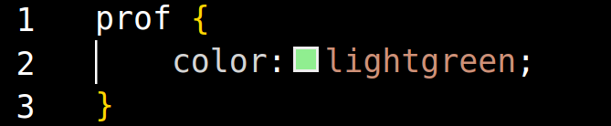

Olá!
... Onde eu estou? Quem sou eu? Quem é você? Como eu consigo te entender?!
Hahaha, calma! Uma pergunta de cada vez, temos todo o tempo do mundo. Primeiro, qual é
sua cor favorita?
Eu não sei... Azul?
Ótima escolha. Como [Primeira Lição: Por que não tenta alterar a sua cor?] É simples, veja:

Agora eu sou verde!
Assim?
Muito bem! Você aprende rápido. Agora, vamos para um lugar menos apertado, e eu responderei suas
perguntas.
- Continue -